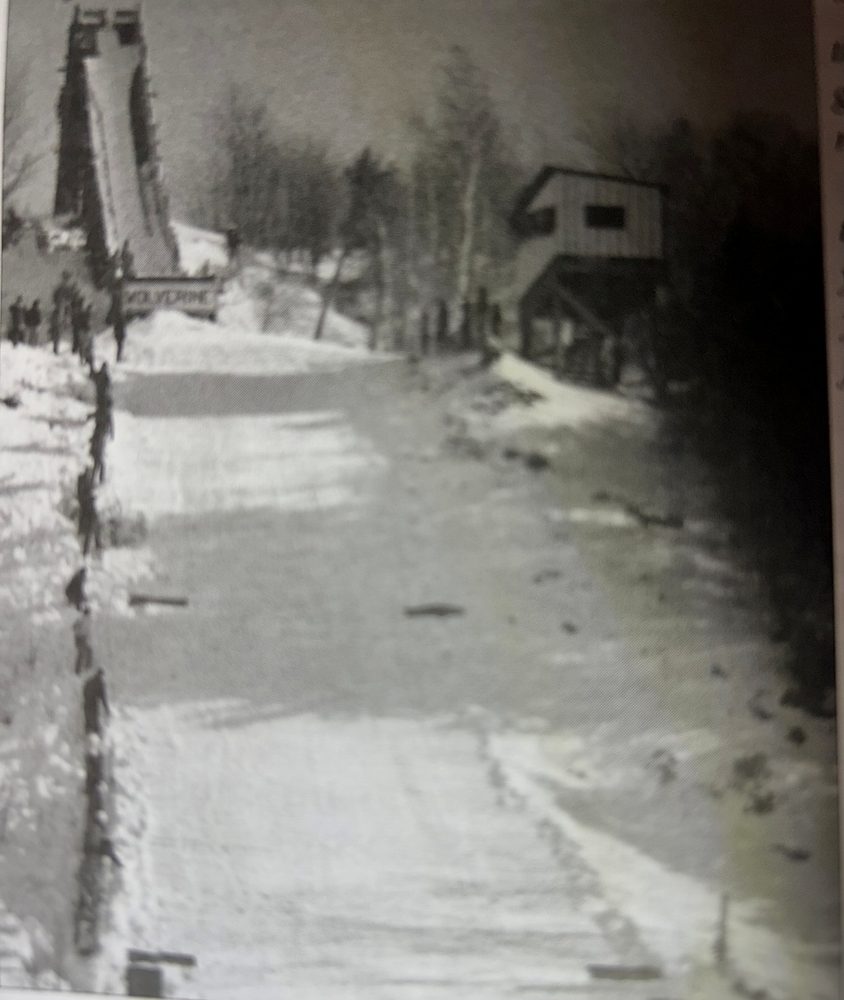
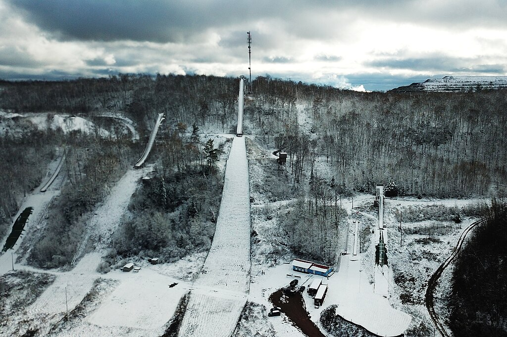
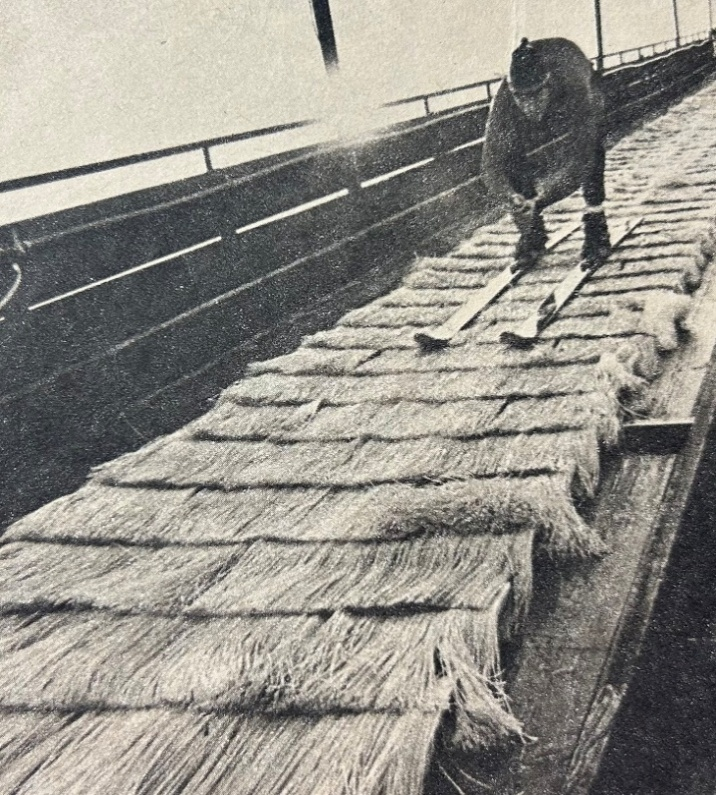

4 The Midwest Circuit
During the 70’s and 80’s, the upper Midwest ski jumping tournament circuit was distributed across the western U.P., southern half of Wisconsin, eastern Minnesota, and northern Illinois. Until the late 70’s, the Gogebic Range Ski Club had a nucleus of ski jumpers who maintained the local ski jump, trained, and traveled together nearly every weekend to a Midwest tournament from the first full week of January through the middle of March. Most of the intermediate to large hills comprising that circuit are mapped below.

Most of us had our own favorite hill(s), for various reasons. Perhaps it was the air currents on a particular hill, the detailed attention that the local club applied to hill preparation, the efficiency meet registration (on-site in this era), or the ease in which to traverse the snow paths up the hill and scaffold. On each weekend, there were usually two or more senior level tournaments simultaneously occurring on intermediate and large hills somewhere in the Midwest circuit. A USSA coordinated schedule enabled ski clubs to reserve their calendar spot year after year.
As I progressed through a relatively brief jumping career (1968 – 1981), I had the privilege of riding most, but not all, of the intermediate and large ski jumps in the region. However, due to meet cancellations or personal scheduling conflicts, I never had the chance to ride the ‘far south’ hills in northern Illinois, i.e. Rockford and Fox River Grove.
4.1 Wolverine Regenerated
In the early 70’s, there were regular attempts at using the scaled down and repaired Wolverine scaffold, to fill the need for a hill bigger than the 30m Iron Bowl. The scaled down Wolverine in the mid-to-late 60’s was handicapped in that it was neither shaped to contemporary specifications nor consistent with its original design roots before a storm raised havoc. It was a hybrid of sorts. The partially salvaged inrun had a steep top half, followed by a sharp transition to a long, effectively flat takeoff table. It couldn’t be used for sanctioned competition although it still provided ‘big air’ ride for recreational purposes.
It took forethought, expertise, and determination by several stalwart members of the ‘Greatest Generation’ to get Wolverine rebuilt and back on stage in 1975. To bring Wolverine back to life, the ski jumping community was fortunate to have the unflinching commitment of a relatively small group, led by former jumpers, such as Wally Kusz, Bob Shea, Frank Pribyl, Charlie Supercynski and others that I apologize for failing to recall or being unaware. Others with little personal ski jumping history were also very active, committed supporters, such as Ernie Mattson, Ed Lakner, and Don Bull. Their altruistic support was extensive and inspiring.
The entire Wolverine jumping hill had to be re-contoured to the updated profile. Charlie Supercynski led the redesign and summarized the cost efficient material and labor. It took intensive effort by a modest size crew to get Wolverine back on its feet, including re-profiling the landing hill, reshaping a longer knoll, reworking the entire inrun slope by moving tons of earth, and constructing an entirely new scaffold on top of it. With the complete revision of Wolverine to prevailing 1975 hill standards, the region could once again point with pride to the historic 55m (some say 50m) ski jumping hill.
Not to rehash its rich history prior to the 1975 rebuild, the new Wolverine established an invaluable bridge to prepare local ski jumpers for larger hills in addition to attracting national level competition. Before Wolverine was re-established in 1975, I was impressed how a few of the more experienced Ironwood jumpers, such as John and Mike Kusz, Bruce and Gene Harma, Russ Anderson and several others could venture to ride the large 90m hills like Pine Mountain or Westby, even though their preparation was limited primarily to the small 30m Iron Bowl, the scaled down Wolverine, or brief experiences on a few other intermediate size hills.
4.2 Natural Headwinds
Wolverine had a long reputation of riding like a bigger hill, due to the prevailing northwesterly winds in the Ironwood Township Section 12 Road valley. The face of the bluff upon which Wolverine was built points directly into that wind (and did I mention toward the old Savonen homestead?). These natural headwinds provide jumpers with an airstream comparable to the next larger hill size. A steady headwind favors the aerodynamic lift of birds, kites, airplanes, and ski jumpers. On sunny days with a gentle breeze, it was not unusual to see a hawk or eagle hovering motionlessly high overhead.
After executing an excellent take-off, a ski jumper transitioning into flight position was met by an airspeed differential (skier speed + opposing headwind velocity) that produced an exhilarating lift. With the lower and more lateral flight trajectory of the updated Wolverine hill design, a ski jumper had to take full advantage of the airlift to be successful.

With Wolverine’s reputation for big air and early season lake effect snowfall, it influenced the U.S. national ski jumping team to jump at the opportunity to be the first few to practice and compete on its updated version, prior to the arrival of the regular competitive season.
4.3 A Highpoint for Local Jumping
The 1975-1976 season could also be characterized as a two decade (1960 – 1980) highpoint for local ski jumping, accentuated by the inaugural December 1975 tournament. Besides the U.S. national team and other regional riders, the tournament included seven local jumpers, five of which were in their last year or two of junior class age. Within the next three years, life’s circumstances dictated that all but John Kusz and I had effectively retired from the sport, and I couldn’t stay much longer (retiring by 1981).

During practice on Wolverine, if taking full advantage of top gate inrun speed, you could enjoy long flights. If still 7 – 10 feet above the landing hill after clearing the knoll, you could peer over the skis to the bottom of the hill slope and outrun.
One of my most memorable rides occurred on one sunny, but otherwise unremarkable Saturday afternoon practice. Only three of us were riding one day, so our small crew alternated between being the jumper at the top of the inrun or standing at the knoll to flag the next jumper.
As I cleared the knoll during one flight, I knew it was a very good ride. Like other sports when an athlete is “in the zone”, time pauses and sound nearly ceases. All I could hear was a very gentle tap-tap as my ski tips lightly touched each other a couple of times during flight. And then, after what seemed like a long time, the ride had come to an end, and I landed softly as a feather.
4.4 The Challenges of Wolverine
An additional benefit of a northwest facing ski hill like Wolverine was that it was mostly shielded from direct winter sunlight which can soften or melt snow during mid-winter thaws, thus requiring extra effort to keep the inrun covered with snow or bring a premature end to the jumping season. The Wolverine inrun and landing were also protected from direct sunlight most of the winter day by trees lining its southwesterly side. (Less favorably, the Copper Peak ski flying hill faces southeast, which increases the challenge of keeping the massive inrun and landing hill prepared with adequate snow covering, especially if a mid-winter thaw occurs).
The first full winter (1976) of new Wolverine tested our stamina for hill preparation since snowfall totaled 265 inches, almost 100 inches greater than an average year on the Gogebic Range. By then, with the number of regularly active ski jumpers in the Ironwood area dwindled to a less than a dozen, it would have been impossible to keep both the Iron Bowl and Wolverine hills in shape. So, without lights on Wolverine at that juncture, jumping practice was limited to weekends.
As mentioned, although the early arriving and late departing snow in the Ironwood area would theoretically enable the longest jumping seasons in the Midwest (from mid-November until late March), the sheer effort for a small team to keep the hill in ski jumping shape throughout the winter did not afford more jumping uptime. More so, once the out-of-town ski jumping meet circuit commenced in early January, the number of weekends practicing on the home hill decreased further.
On an intermediate size hill, such as Wolverine, a solid day of practice amounted to anywhere from 8 - 12 rides. On a few rare days, the number of rides maxed out at greater than 15. Trudging up the landing hill and inrun would eventually be tiring, even for a young, fit athlete. In the late 70’s, when our ski jumping was largely limited to weekends, I personally totaled 175 – 225 jumps for an entire season, including out of town meets. In that regard, I envied some of my peers who had home hills with a rope tow or T-bar which facilitated 25 or more rides a day and a squadron of youth and adults to keep the jumping hill in shape, while generally dealing with less snowfall than Ironwood.
More so, a majority of the other ski jumping hills had lights, as did the 30m Iron Bowl before it had to be abandoned. We competed against clubs where zealous jumpers could accumulate more than 400 jumps a year. By the way, the FIS is not prone to sanction an international or ski flying hill meet nowadays if the facilities do not include a lift for the ski jumpers from the bottom of the hill to the top of the scaffold. C’mon, man. The hill climb was part of our cross training!
4.5 Circus Thrills
Early 1900’s ski jumpers persistently encouraged the perception of being bold and daring stuntmen, which they were. It was common for a carnival like setting attracting huge paying audiences. No less famous than P.T. Barnum’s circus incorporated ski jumping into their early venues. A professional ski jumping association actually formed in 1929, but disbanded by 1934, not for lack of demand or paying audience, but for lack of available, uninjured jumpers.
Thrills and spills were promoted as the reason to come and see exhibition riders attempt somersaults and other amazing gymnastic feats with ski equipment and scaffold construction that would astound the most fearless jumper today. To attract audiences, they reinforced the stereotype of a dangerous sport.

Henry Hansen performing his signature somersault at some unknown location, sometime in the 1940’s. He was one of less than a handful that did this amazing stunt over a hundred times around the country. Fellow ski jumpers would call him ‘crazy in the head’. He claimed to have experienced no serious injuries. Note the rickety super steep temporary scaffold construction with no side rails and at most a 4 foot wide inrun. And he did that with full size, heavy hickory jumping skis.
Even if fear entered a ski exhibitionist’s mind, these macho daredevils of yesteryear couldn’t surrender to it amidst their ski jumping buddies and responsibilities to the paying public.

Temporary inrun and landing hill scaffolds for competitive or exhibition jumping were built in population centers, such as Chicago’s Soldier Field, the Hollywood Bowl, the LA Coliseum, and even a few indoor venues, like New York’s Madison Square Garden. The temporary ski jump constructed at Soldier Field hosted over 60,000 spectators and 140 jumpers.

4.6 Diamond in the Rough
In addition to jumping competitions, acrobatic exhibitions were performed on these hastily constructed jumps. Four ski jumpers from Ironwood contributed to at least one Soldier Field exhibition by performing the ‘diamond’ formation. The ‘diamond’ formation involved four ski jumpers proceeding simultaneously down the inrun and through the air. The formation consisted of a lead skier traveling down the center of the inrun track like usual, followed immediately by two side by side (wingmen) skiers, and trailed by a fourth person.
The possibility of a mishap multiplied if the wingmen came too close to the inrun walls or collided with each other. Since both wingmen had one ski riding in rough snow outside of the established inrun track, it would be an uncomfortable approach to the take-off. Being less than a foot apart at take-off, the wingmen had to ensure that their ensuing flights did not converge, but diverged. Of course, if any of the first three riders fell, the fourth and last jumper could be joining a pileup.
One fine day immediately following the conclusion of a Wolverine meet in 1976, someone had the wild hair idea that we should enter carnival mode and recreate the diamond stunt. For our formation, I was nominated as the lead rider which is the easiest job (if you didn’t fall). Before launching down the inrun, my cohorts apprehensively emphasized to me to stay crouched after landing to maintain speed and avoid being caught from behind.
And away we went. There were no collisions, but since I was the lead rider, I couldn’t see what was transpiring behind me. By the time I had landed and arrived at the outrun to peek behind, I saw a splintered diamond far behind. One wingman had spun out, but the tail rider was able to sidestep him. It wasn’t a professional exhibition and would have needed more practice and coordination to resemble what local ski jumping stuntmen performed 40 years earlier in front of a huge Chicago crowd. And to think that the USAF Thunderbird pilots keep four jets within 18 inches of each other in their diamond at the speed of sound! Our attempt at a diamond was fun. We never tried that again.
4.7 Long-Standing Jump
Another more common long-standing tradition in regional ski jumping meets was the long-standing jump. After the formal competition concludes, some tournaments offer jumpers one more optional ride to compete for long-standing jump honors where distance matters, but not style. Without concern for preserving style points, a more aggressive go-for-broke approach could be attempted, even though the longest jumps are generally accompanied with superior style.
After completion of the formal meet, many jumpers are prone to forego the long-standing jump competition. They may want to get an early start on the Sunday evening trip home, especially if they were not in the running for awards from the formal competition. And, if they had no realistic expectation of cranking out an exceptionally long long-standing jump, it was time to put the skis away. But, with formal tournament tension dissipated, the better jumpers often enjoyed one more ‘free’ ride. Pragmatically, the long-standing jump competition also filled time while the official tournament results were being compiled.
By the usual rules of ski jumping and even in a long-standing competition, one cannot fall or touch snow with any body part. And, even if the longest standing jump of the day exceeds the existing hill record, it does not change the official hill record, since the record only applies to official tournament jumps.
At the completion of a Wolverine meet one Sunday afternoon in 1980, the organizers staged a long-standing competition. Being an average ‘B’ class senior jumper now that I had graduated from the junior class the prior year, it would be unusual for me to compete in the long-standing jump against the U.S. national team and other ‘A’ class riders. However, an unexpected loophole was created, stipulating that long-standing competitors could start from any gate of their choosing.
When I got near the top of the scaffold and walked past the U.S. team members on my way to the top gate, they were incredulous. Kip Sundgaard, one of the U.S. national team jumpers, peered up from his lower gate and blurted “You’re crazy”. I accepted his statement as a badge of either courage, insanity, or both. Having always used the top gate during practice days at Wolverine and rarely threatening the absolute bottom of the landing hill, I thought nothing of it.
With the additional speed of a well-worn, icy inrun track at the end of a tournament and my good take-off, I catapulted over the knoll higher than ever before. There was acute awareness that this trip was exceeding normal fly zones. When Wally used to say stretch out over your skis and sight the bottom of the hill, I didn’t picture it coming up so quickly to meet me. Unaccustomed to the view, I prematurely backed out of flight position. The result was that I landed so much shorter than the initial trajectory offered. By landing far back on my heels, I spun out harmlessly, but disappointedly at the bottom.
A top tier jumper accustomed with toying the extremes of landing hills would have exploited the trajectory, nailing a jump well beyond the hill record (albeit an unofficial distance as mentioned). What a missed opportunity for me! On my walk up the hill afterward, I was saluted by Bob Shea saying “You had so much height you looked like Checko.” Chester ‘Checko’ Kusz, brother of Wally, was a powerfully stocky and exceptionally accomplished jumper during the heyday of an earlier generation of Ironwood jumpers.